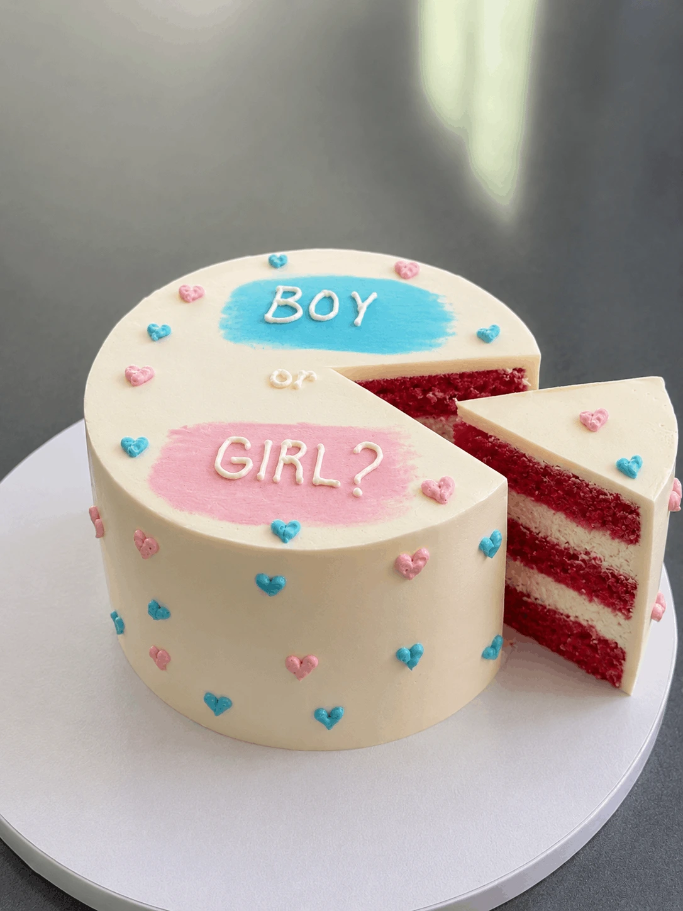

Versüsse deine Babyparty mit einer handgemachten Traumtorte – individuell gestaltet nach deinen Wünschen.
Ein neues Leben kommt in die Welt und das verdient eine ganz besondere Torte. Bei MottoCake in Baden gestalten wir individuelle Baby Shower Torten, die genau so einzigartig sind wie das kleine Wunder, auf das gewartet wird. Ob klassisches Rosa und Hellblau, fototorte oder ein ausgefallenes Gender-Reveal-Design. Wir setzen deine Vision präzise um.
Sobald du das Geschlecht erfährst, beginnen wir sofort mit der Zubereitung und du kannst deine fertige Wunschtorte oft schon am nächsten Tag in Empfang nehmen!
Du bringst dein Wunschbild. Wir bringen die Torte zum Strahlen.

Schicke uns via WhatsApp oder Formular ein Bild deiner Traumtorte, das Datum der Babyparty und die Anzahl Gäste.
Wir melden uns innerhalb von 24h mit einem unverbindlichen Angebot. Nach deiner Freigabe reservieren wir deinen Termin.
Hole deine Torte direkt in Baden ab oder wähle die bequeme Lieferung zu deiner Feier in der Region Aargau.
Kontaktiere uns noch heute für ein unverbindliches Angebot. Sende uns einfach dein Wunschdesign per WhatsApp – wir melden uns innert 24 Stunden.